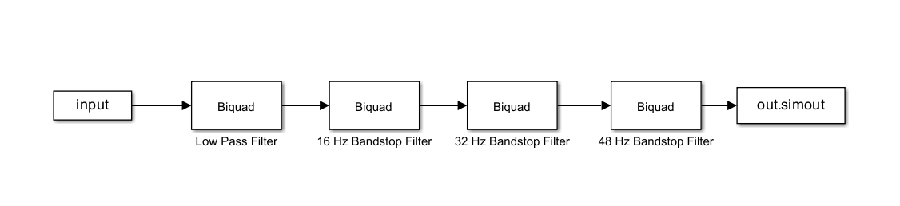
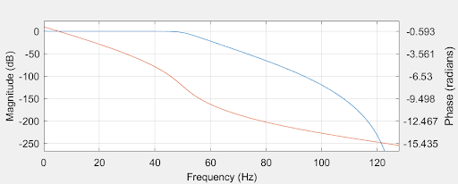
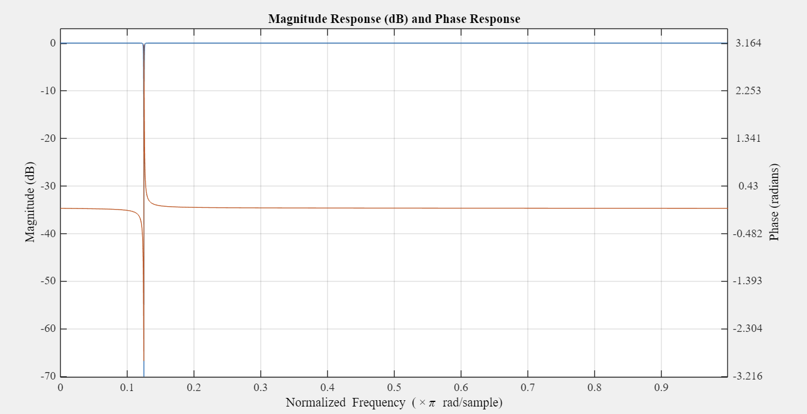
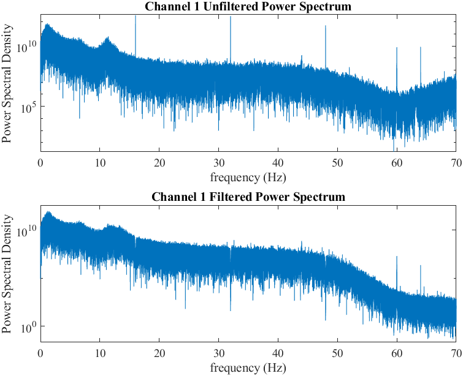
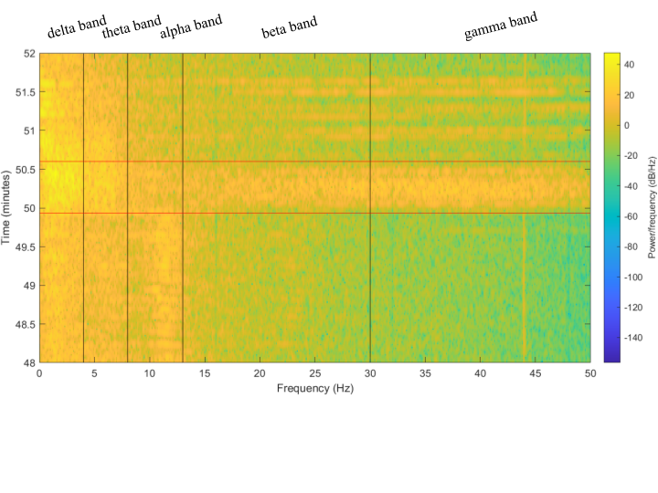
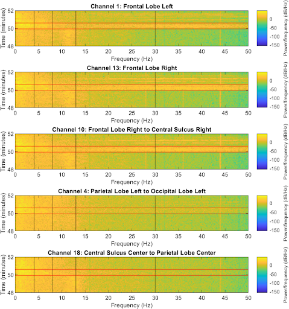

Electroencephalogram (EEG) Spectrograms for Seizure Analysis
1. Clinical Background & Goal
Clinical Motivation: Epileptic seizures are characterized by sudden bursts of abnormal synchronous neural activity, producing distinct shifts in spectral power across clinical EEG frequency bands (Delta, Theta, Alpha, Beta, and Gamma). Time-frequency spectrograms allow clinicians to track these spectral transitions to confirm epilepsy, localize the seizure onset zone, and classify seizure events.
Dataset & Methodology: Analyzed 23-channel pediatric scalp EEG recordings from the PhysioNet CHB-MIT Scalp EEG Database sampled at 256 Hz. Evaluation focused on a 1 hour recording featuring an annotated 40-second ictal event. Signals were conditioned through a cascaded IIR Butterworth filter pipeline to remove electrical and high-frequency noise, and spectrograms were generated to analyze frequency band power shifts during the seizure event.

2. Spectral Analysis & Artifact Identification
To establish filter specifications prior to time-frequency analysis, four channels targeting different areas of the brain were isolated across three 60-second Hanning windows—two capturing baseline brain activity and one encompassing the seizure event.
- Ictal Spectral Signature: During seizure onset, power spectral density (PSD) increased markedly in the Delta (<4 Hz), Theta (4–8 Hz), and Gamma (30–50 Hz) bands.
- Instrument Artifact Identification: Spectral analysis revealed a 16 Hz interference spike alongside harmonics at 32 Hz and 48 Hz—characteristic of concurrent Electrical Impedance Tomography monitoring.
- Bandwidth Selection: A 50 Hz upper cutoff was selected to reject high-frequency noise while preserving epileptic Gamma activity (30–50 Hz).

3. Cascaded Biquad IIR Filter Architecture
A cascaded digital filtering pipeline was implemented in Simulink using biquad IIR Butterworth sections. IIR filters were selected for their sharp roll-off characteristics, as nonlinear phase distortion does not impact frequency domain analysis.


10th-Order Butterworth LPF (fc = 50 Hz)
Provides steep attenuation above 50 Hz to eliminate high frequency noise while preserving the full Delta through Gamma clinical spectrum.

4th-Order Notch Filters (16, 32, 48 Hz)
±0.1 Hz stopbands (e.g., 15.9–16.1 Hz) suppress monitoring equipment interference without distorting adjacent neural bands.

4. Single-Channel Time-Frequency Spectrogram Analysis
Short-Time Fourier Transform (STFT) spectrograms were generated using a 10-second sliding window with 9-second overlap (1-second temporal step) to balance frequency resolution against temporal localization of seizure transitions.

5. Multi-Channel Spatial Localization
Comparing time-frequency spectrograms across five cortical regions enabled spatial localization of the seizure's irritative zone:
- Right Frontal Focus (Channels 13 & 10): Exhibited the strongest Beta and Gamma band power surges during the seizure window, localizing primary seizure onset to the anterior right hemisphere.
- Left Frontal Involvement (Channel 1): Demonstrated moderate secondary power elevation in Beta/Gamma bands, indicating cross-hemispheric propagation.
- Posterior Sparing (Channels 4 & 18): Parietal and occipital derivations showed minimal high-frequency power shifts, confirming a focal frontal seizure rather than generalized cortical involvement.

6. Future Improvements & Clinical Utility
- Adaptive Windowing: Implement shorter STFT windows or continuous wavelet transforms to sharpen resolution and track seizure propagation across electrodes.
- Improved Visualization: Develop a unified 23-channel topographic spectrogram dashboard to assist neurologists in rapid analysis of seizure dynamics.
- Automated Seizure Detection: Extract band-power ratios (Gamma/Alpha and Delta/Alpha) as real-time features for automated clinical event flagging.